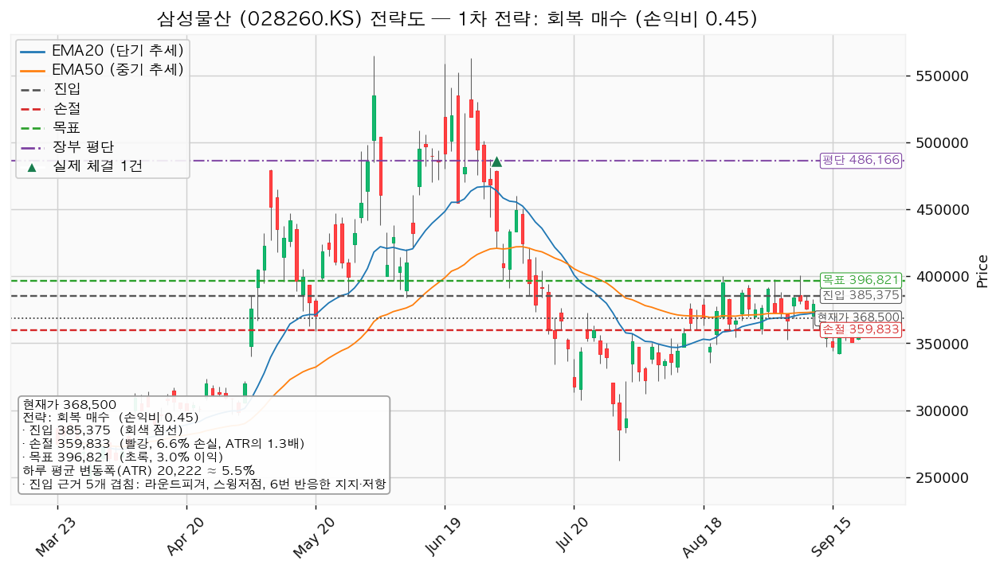
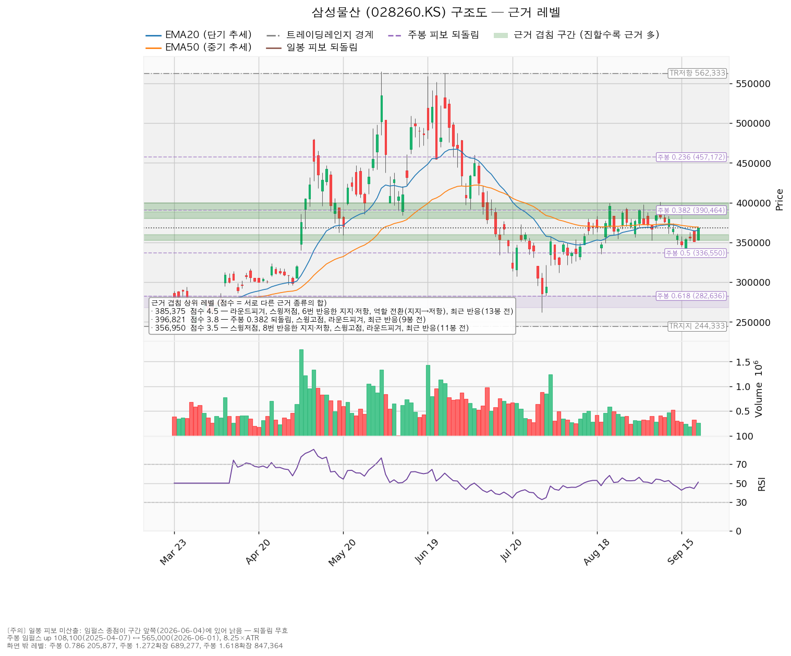
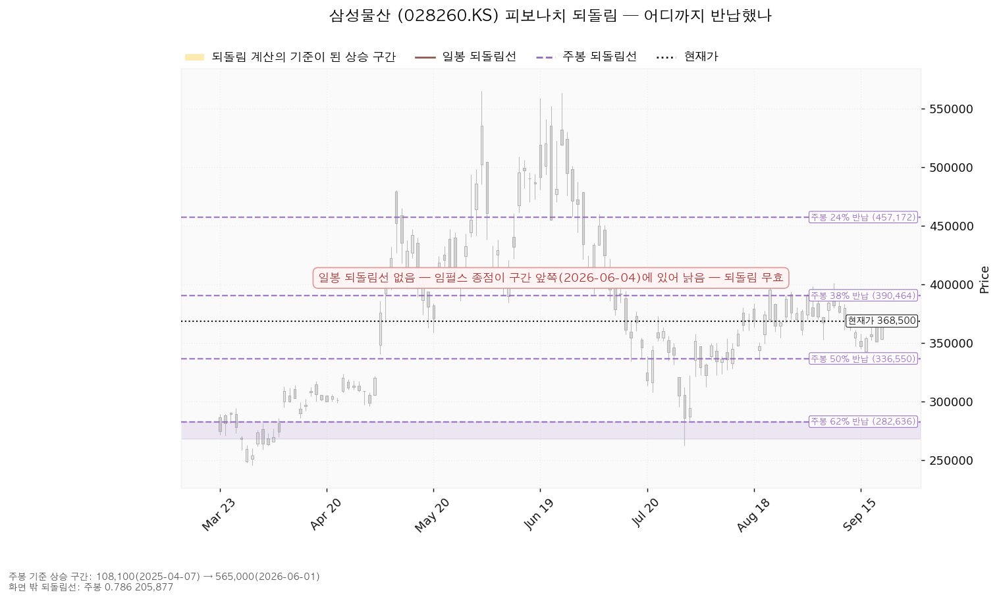
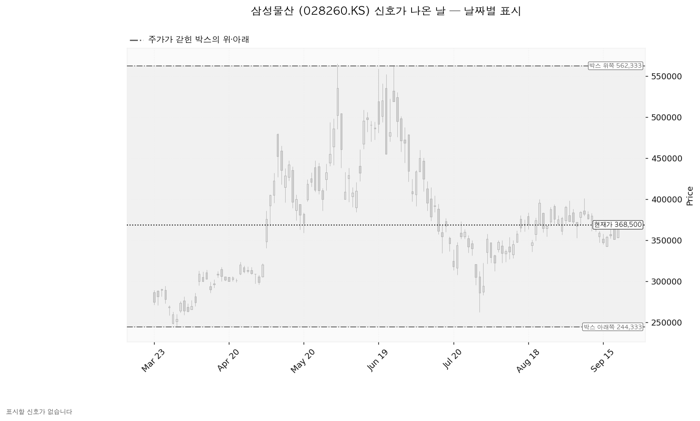

삼성물산(028260.KS)은 건설·상사·패션·리조트 사업을 운영하고 삼성전자 등 계열사 지분을 보유한 한국 기업입니다.
현재가 368,500원 (2026-09-21 종가) · 하루 평균 변동폭 20,222원(주가의 5.49%)
| 구분 | 가격 | 판정 방식 | 현재가 대비 | 상태 |
|---|---|---|---|---|
| 회복선(진입 조건) | 385,375원 | 일봉 종가로 회복한 뒤 되돌림에서 지지되는지 — 이번 셋업의 진입가와 같은 자리입니다 | +4.58% (0.83 ATR) | 회복 대기 (손익비 미달로 이번엔 집행하지 않음) |
| 집행 손절 | 359,833원 | 장중 도달 시 즉시 청산 — 385,375원에 진입한 경우에만 유효하며, 미진입 상태에서는 의미가 없습니다 | -2.35% (0.43 ATR) | 미진입 |
| 매수 계획 종료 기준 | 356,950원 | 일봉 종가가 아래로 마감 / 또는 2026-10-27 실적 | -3.13% (0.57 ATR) | 유지 중 |
| 확인선 | 396,821원 | 일봉 종가 돌파 후 되돌림에서 지지 확인 | +7.69% (1.40 ATR) | 미돌파 |
| 폐기선(구조) | 244,333원 | 이탈 → 3거래일 내 회복 실패 → 반등이 저항으로 확인 | -33.70% (6.14 ATR) | 유지 중 — 실무상 작동하지 않음 |
① 직전 트리거는 충족됐습니다. 직전 계획은 "356,950원 일봉 종가 회복 시 진입"이었고, 9월 17일 종가 355,500원·18일 351,000원으로 미달하다가 2026-09-21 종가 368,500원으로 회복했습니다. 확인 종가가 진입가보다 +3.24% 높은 자리에서 나왔습니다. 그 뒤 목표 386,393원·손절 331,139원 어느 쪽에도 닿지 않았고(같은 날 발생), 관망 종료 기준 336,550원은 한 번도 종가로 깨지지 않았습니다. 다만 체결 장부에는 이 진입의 매수 기록이 없습니다 — 기록된 것은 2026-07-01 매수 3주(평단 486,166원)뿐이라, 조건은 충족됐으나 집행되지 않은 상태로 봅니다. 실제로 사셨다면 텔레그램으로 수량·단가·날짜를 알려 주십시오.
② 좌표가 위로 옮겨졌습니다. 356,950원(8번 반응한 가격대)을 되찾으면서 그 위 380,000~388,750원 구간이 새 회복선(385,375원)이 되고, 확인선·목표는 386,393원에서 396,821원으로 올라갔습니다. 진입 근거 겹침 점수는 6.0점에서 4.5점으로 내려왔는데, 일봉 되돌림선이 이번엔 계산되지 않았고 주봉 38% 되돌림 390,464원이 위쪽 396,821원 구간으로 묶였기 때문입니다. 집행 손절은 331,139원 → 359,833원, 하루 평균 변동폭은 21,644원 → 20,222원, 폐기선 244,333원은 그대로입니다.
③ 판단이 바뀌었습니다: 조건 대기 → 패스. 직전 손익비는 1:1.14였고 이번은 1:0.45입니다. 진입가가 위로 올라간 만큼 그 위 목표까지 남은 거리가 11,446원(하루 평균 변동폭의 0.57배)으로 줄어든 반면, 손절은 364,888~369,320원 구간 아래로 밀려 25,542원이 됐기 때문입니다. 박스 안쪽 판정도 매집 우위에서 중립으로 내려왔습니다(지지 테스트 거래량 추세가 감소에서 혼조로, 상승봉 대 하락봉 거래량비 1.09 → 1.07, 저점 절상은 유지).
산출된 셋업은 하나이며, 손익비 1 미만이므로 집행하지 않습니다.
| 셋업 | 진입 | 손절 | 목표 | 손익비 (손절 폭) | 구조 증명도 | 엣지의 종류 | 판정 |
|---|---|---|---|---|---|---|---|
| 회복 매수 | 385,375원 | 359,833원 | 396,821원 | 1:0.45 (1.26 ATR) | 회복 확인형(1.0, 최고 등급) | 모멘텀 — "저항을 종가로 되찾으면 그 방향이 이어진다" | 패스 |

대표로 고른 사유는 *"손익비 0.45 × 구조 증명도(회복 확인형) × 근거 겹침 4.5점으로 선정. 저항을 종가로 회복한 뒤에만 진입한다 — 진입가는 불리하나 구조가 먼저 증명된다"* 이며, 상대강도와 거래량으로 순위에 0.866배가 곱해졌습니다(지수 대비 20일 초과수익 -3.43%, 상대강도선 20일 기울기 -3.28%, 돌파 구간인데 거래량이 20일 평균의 최대 0.96배). 후보가 하나뿐이라 손익비 1등과 대표 셋업이 갈리는 문제는 이번에 없었습니다.
셋업 무효화 기준선은 진입가와 같은 385,375원이며, 시나리오 폐기선 244,333원과는 다른 가격입니다.
| 단계 | 트리거 | 의미 | 행동 |
|---|---|---|---|
| ① 관찰 | 일봉 종가가 385,375원 아래로 마감 | 구조 이탈 시작 — 되돌아 올라오면 속임수 하락일 수 있어 아직 무효가 아닙니다 | 신규 진입만 중단. 집행 손절은 그대로 둡니다 |
| ② 경고 | 이탈 후 3거래일 안에 385,375원을 종가로 회복하지 못함, 또는 그 전에 일봉 종가가 365,153원 아래로 마감(하루 평균 변동폭 1배만큼 더 밀림) — 둘 중 먼저 오는 쪽 | 저항 회복 실패 가능성이 우세해짐 | 잔여 비중 축소. 반등이 나오면 385,375원에서의 반응을 확인합니다 |
| ③ 무효 | 반등이 385,375원에서 막히고 그 아래로 되밀림(지지가 저항으로 전환) | 셋업 폐기 — 구조 해석이 틀린 것으로 확정 | 포지션 정리. 새 구조가 만들어질 때까지 관망 |
가격을 한 번 내준 것은 1단계일 뿐입니다. 집행 손절 359,833원은 이 판정과 무관하게 별도로 작동하고, 장중 일시 이탈은 어느 단계에도 해당하지 않습니다.
논지 무효화. 폐기선 244,333원은 현재가에서 하루 평균 변동폭의 6.14배 아래로 3배를 넘어, 가격 기준 무효화로는 쓸 수 없습니다. 대신 2026-10-27 실적에서 다음 중 하나가 확인되면 "추정치는 유지되는데 배수만 줄어든 하락"이라는 해석을 접습니다 — ⓐ 내년 컨센서스 EPS가 90일 +2.8%·30일 +0.4%의 상향에서 하향으로 돌아서는 경우 ⓑ 영업현금흐름이 적자로 돌아서는 경우(직전 결산 3.02조원 흑자) ⓒ 설비투자가 1.91조원에서 크게 늘어 잉여현금흐름이 적자로 돌아서는 경우(직전 결산 1.12조원 흑자).
| 시나리오 | 조건 | 구조 해석 | 행동 |
|---|---|---|---|
| 상승 전환 | 385,375원 종가 회복 후 지지 → 396,821원 종가 돌파 | 속임수 하락 확인 → 강세 신호 → 되돌림 지지 → 상승 국면 | 385,375원 회복만으로는 이번 손익비 1:0.45를 집행하지 않습니다. 396,821원을 일봉 종가로 넘어서면 그때 새 셋업으로 진입·손절·목표를 다시 산출합니다. 기존 3주는 그대로 둡니다 |
| 횡보 지속 | 244,333원을 지키며 396,821원 아래에서 박스 유지 | 구조는 유지 — 매물 소화에 시간이 필요한 국면이며 부정적 신호가 아닙니다 | 신규 매수를 보류하고 기존 3주는 보유 유지합니다. 박스 안쪽 세 가지를 추적합니다: 지지 테스트마다 매도 거래량이 줄어드는지(현재 혼조), 저점이 절상되는지(현재 절상), 상승할 때 거래량이 실리는지(현재 상승봉 대 하락봉 거래량비 1.07) |
| 시나리오 폐기 | 244,333원 이탈 후 3거래일 내 회복 실패(또는 그 전에 종가 224,112원 아래 마감) + 반등에서 저항으로 확인 | 매집이 아니라 재분산 — 추가 저점 갱신 가능성을 엽니다 | 기존 3주를 포함해 정리한 뒤, 새 매도 절정과 새 박스가 만들어질 때까지 관망합니다. 다만 현재가에서 6.14배 아래라 실제로는 위 논지 무효화가 먼저 작동합니다 |
조회된 일봉은 727개이며, 40·90·180봉 세 창을 시험해 최근 180봉(약 아홉 달)을 골랐습니다. 종가가 박스 안에 머문 비율은 98.3%(90봉 97.8%, 40봉 77.5%)이고, 90봉 창은 구간 앞뒤 종가 이동분이 박스 폭의 29.9%로 나와 횡보로 보기 어려워 빠졌습니다. 선택된 박스는 244,333~562,333원이며 폭이 하루 평균 변동폭의 15.73배로, 실행 기준으로 쓰기엔 너무 넓어 진입·손절·목표는 박스 경계가 아니라 아래 겹침 구간에서 골랐습니다. 가격은 직전 113,633~244,333원 구간에서 위로 올라와 이 박스에 들어왔습니다 — 아래에서 올라온 박스이므로 다시 모으는 국면과 내다 파는 국면이 같은 모양이 되고, 안쪽에서 일어난 일로 갈라야 합니다. 하단 테스트 6회(2026-02-02 288,000원 거래량 평균의 0.92배 → 02-06 276,500원 1.82배 → 03-09 253,500원 0.77배 → 03-31 245,500원 1.31배 → 04-13 286,000원 0.91배 → 07-29 262,000원 1.41배)는 혼조로 판정됐고, 저점은 절상, 상승봉 대 하락봉 거래량비는 1.07입니다. 종합 판정은 중립이며, 직전 리포트의 매집 우위에서 한 칸 내려온 값입니다. 현재가 368,500원이 8번 반응한 352,500~359,000원 위로 올라왔는데도 지지 확인 매수가 나오지 않은 것은 이 중립 판정 때문입니다 — 그 셋업은 박스 안쪽이 매집 우위일 때만 성립합니다.
| 가격대 | 대표값 | 점수 | 근거 | 현재가 대비 |
|---|---|---|---|---|
| 390,464~400,000원 | 396,821원 | 3.8 | 주봉 38% 되돌림, 스윙고점, 라운드피겨, 9봉 전 반응 | +7.69% |
| 380,000~388,750원 | 385,375원 | 4.5 | 라운드피겨, 스윙저점, 6번 반응한 가격대, 역할 전환(지지→저항), 13봉 전 반응 | +4.58% |
| 364,888~369,320원 | 367,569원 | 2.7 | EMA20, 6번 반응한 가격대, EMA50, 15봉 전 반응 | -0.25% |
| 352,500~360,000원 | 356,950원 | 3.5 | 스윙저점, 8번 반응한 가격대, 스윙고점, 라운드피겨, 11봉 전 반응 | -3.13% |
| 336,550~340,000원 | 338,275원 | 2.6 | 주봉 50% 되돌림, 라운드피겨, 3봉 전 반응 | -8.20% |
| 314,000~323,000원 | 318,800원 | 2.8 | 7번 반응한 가격대, 역할 전환(저항→지지), 라운드피겨, 6번 반응한 가격대 | -13.49% |
| 296,000~303,000원 | 300,667원 | 3.4 | 스윙저점, 6번 반응한 가격대, 역할 전환(저항→지지) | -18.41% |
| 244,333원 | 244,333원 | 1.2 | 박스 아래쪽 | -33.70% |

되돌림. 일봉 되돌림선은 이번에 계산되지 않았습니다 — 기준이 될 상승 구간의 끝(2026-06-04)이 조회 구간 앞쪽에 있어 낡은 것으로 판정됐기 때문이며, 그래서 이 리포트의 되돌림선은 주봉뿐입니다. 주봉 상승 구간은 2025-04-07 108,100원 → 2026-06-01 565,000원(하루 평균 변동폭의 8.25배)이고, 현재가 368,500원은 그 상승분의 43.0%를 반납한 자리로 38% 되돌림 390,464원과 50% 되돌림 336,550원 사이에 있습니다. 위 표에서 쓰인 주봉 되돌림선은 390,464원(목표 구간의 아래 경계)과 336,550원(2.6점 구간의 상단)입니다.

날짜별 신호. 이번 산출에서 Wyckoff 신호가 난 날은 없습니다 — 속임수 하락·속임수 상승·강세 신호·약세 신호 어느 것도 잡히지 않았습니다. 아래 차트에 표시된 날이 없는 것은 조회 실패가 아니라 해당 기간에 신호일이 없었기 때문이며, 국면 후보도 이번엔 특정되지 않았습니다(평탄한 레인지 + 내부 지표 중립).

애널리스트 17명 · 투자의견 적극 매수 · 목표주가 평균 501,176원(+36.00%) / 최저 360,000원(-2.31%) / 최고 665,000원(+80.46%) · 다음 실적 2026-10-27.
(a) 배수. 후행 PER은 이번 조회에 담기지 않아 후행 기준으로 비싸다·싸다를 판정하지 않습니다. 선행 PER은 20.35배이고, 올해 추정 EPS 16,413원(성장률 +9.75%)·내년 18,109원(+10.33%)을 전제로 한 값입니다. 현재가를 올해 추정 EPS로 나누면 22.45배로, 두 배수 차이는 2.1배 수준입니다 — 이익이 급증하는 구간이 아니라 한 자릿수 후반~두 자릿수 초반 성장을 전제한 배수입니다.
(b) 목표주가 분포. 현재가 368,500원은 최저 목표 360,000원을 위로 넘어섰습니다(직전 리포트 시점 351,500원에서는 아래였습니다). 평균까지는 +36.00%지만 최저~최고가 1.85배로 벌어져 있어 평균 하나로 판단하지 않습니다.
(c)·(c-2) 하락의 성격. 6월 4일 고점 565,000원에서 -34.78% 내려오는 동안 컨센서스 EPS는 90일간 올해분 +3.5%, 내년분 +2.8% 상향됐습니다. 추정치가 내려가지 않은 채 가격이 빠졌으므로 배수 수축이며, 사업 악화로 적을 근거는 이 자료에 없습니다. 다만 최근 30일은 올해분 -1.2%, 내년분 +0.4%로 갈립니다 — 내년 추정치의 상향은 겨우 이어지는 정도이고 올해분은 되돌아섰습니다. 상향이 진행 중이라고 보기 어려운 구간이므로, 확인 항목은 2026-10-27 실적 하나이며 그 전에 재평가 계기로 댈 만한 것은 이 자료에서 찾지 못했습니다.
(d) 현금흐름. 2025-12-31 결산 기준 영업현금흐름 3.02조원 흑자, 잉여현금흐름 1.12조원 흑자로 적자가 아닙니다. 설비투자는 1.79조원 → 1.91조원으로 +6.2% 늘었고 증가 폭이 크지 않습니다. 세 수치가 서로 어긋난다는 표시는 없었습니다.
(e) 상승 여력의 분해. 현재 배수는 올해 추정 EPS 기준 22.45배이고, 평균 목표 501,176원은 내년 추정 EPS 18,109원에 27.68배를 매긴 값입니다. 이익 증가만 반영하면(22.45배를 내년 EPS에 그대로 적용) 406,567원으로 +10.33%가 설명되고, 평균 목표까지 남는 +25.67%는 배수가 22.45배에서 27.68배로 더 매겨져야 채워집니다. 평균 목표의 상승분은 대부분 배수 확장에 기대고 있습니다.
주도주 여부. 섹터는 주도 쪽, 종목은 아직 아닙니다. 건설 ETF(117700.KS)의 20일 초과수익은 +10.79%로 한국 11개 섹터 중 1위입니다(5일 -5.48%, 1일 -2.91%). 반면 종목 자체는 지수 대비 20일 초과수익 -3.43%·60일 -7.38%(120일은 +8.29%, 가중 초과수익 -1.69% — 가중치 20일 0.45·60일 0.30·120일 0.25), 상대강도선은 60일 신고가가 아니고 52주 고점 대비 -34.78%라 주도주로 판정하지 않습니다. 컨센서스는 12개월 시계이고 이번 셋업은 수 주 시계이므로 결론이 갈려도 모순이 아니며, 답은 진입·손절·목표로 냅니다.
| 날짜 | 이벤트 | 볼 수치 |
|---|---|---|
| 2026-10-27 | 3분기 실적 발표 | 올해 추정 EPS 16,413원의 경로(최근 30일 -1.2%), 내년 추정 18,109원의 방향, 영업현금흐름(직전 결산 3.02조원)과 설비투자(1.91조원, +6.2%)의 흐름 |
날짜가 확정된 이벤트는 실적일 하나뿐입니다. 그 이후 2~3개 분기의 역풍(예정된 비용 반영, 종료가 예고된 일회성 이익, 기저가 높은 비교 분기)은 이 자료로 확인할 수 없어 적지 않습니다.
손익비 1:0.45(손절 폭 359,833원, 하루 평균 변동폭의 1.26배)로 1을 밑돌아 패스입니다. 조건 점검은 9개 중 3개 통과이며 미달은 이동평균 정배열 · 52주 고점 대비 · 지수 대비 20일 초과수익 · 상대강도선 신고가 · 거래량 강도 · 손익비입니다. 재지 못한 항목은 없습니다.
집행한다고 가정했을 때의 비중은 참고로만 적습니다 — 1회 매매에서 계좌의 1%를 잃는 한도로 계산하면 손절 폭 6.63%에서 계좌의 15.1%가 나오지만, 한 종목에 계좌의 13%를 넘기지 않는 규칙에 따라 13%로 제한되고 그때 손절 도달 시 계좌 손실은 -0.86%입니다. 계좌 총액이 시스템에 등록돼 있지 않아 금액이 아닌 계좌 대비 비율로 적습니다. 기존 3주(평가액 1,105,500원)가 이미 이 종목에 실려 있으므로 13% 한도는 그것을 포함해 계산하십시오.
도구 적합성. 하루 평균 변동폭이 주가의 5.49%로 8% 기준 아래이고, 손절 폭 6.63%는 그 1.26배입니다. 하루치 움직임보다 넓은 손절이라 무관한 흔들림만으로 체결될 자리는 아니며, 시계는 수 주 기준입니다. 손익비가 1을 밑도는 것은 진입 385,375원에서 목표 396,821원까지 11,446원(하루 평균 변동폭의 0.57배)만 남아 있기 때문입니다.
ATR: 하루 평균 변동폭. EMA20·EMA50: 최근 20일·50일 평균 흐름. RSI(14): 0~100으로 최근 상승·하락 강도를 잰 값(현재 51.03). PER: 주가 ÷ 주당순이익. EPS: 주당순이익. 손익비 1:0.45: 1을 걸어 0.45를 기대한다는 뜻.